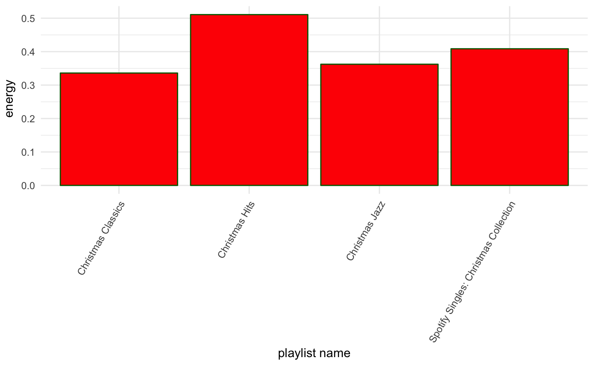
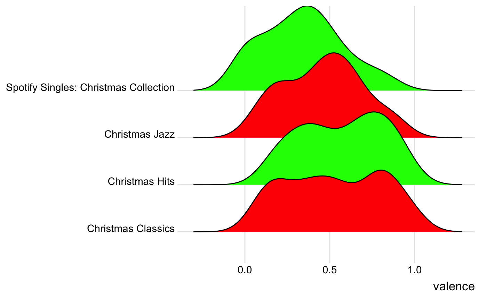
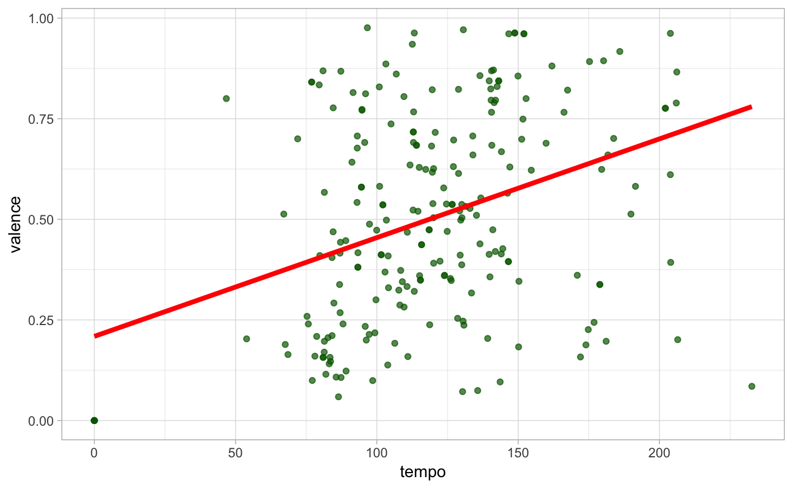
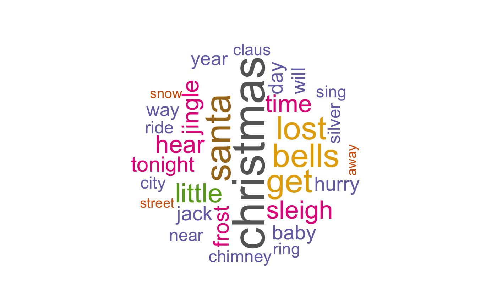

spotiverseR.RmdThis package, spotiverseR, aims to extend the spotifyr package with helper functions and data visualizations for playlists. spotiverseR integrates multiple packages into spotiverseR functions such as dplyr, ggplot2, wordcloud, geniusR, etc., in order to let users analyze playlists and create compelling playlist visualization.
devtools::install_github("charlie86/spotifyr")
devtools::install_github("kimpham23/spotiverseR")
library("spotifyr")
library("spotiverseR")The following authetication excerpt comes from the spotifyr package (here):
First, set up a Dev account with Spotify to access their Web API (here). This will give you your Client ID and Client Secret. Once you have those, you can pull your access token into R with get_spotify_access_token().
Sys.setenv(SPOTIFY_CLIENT_ID = "xxxxxxxxxxxxxxxxxxxxx")
Sys.setenv(SPOTIFY_CLIENT_SECRET = "xxxxxxxxxxxxxxxxxxxxx")
access_token <- get_spotify_access_token()Your Spotify URI can be found on the Spotify app. On the top right corner, go to profile. Under your name, click on the circlular button and hit “Copy Spotify URI” in the drop down list. It is recommended to save the URI in an R variable called ‘uri’ as demonstrated below.
uri <- 123456789In order to retrieve the comprehensive dataset of your Spotify public playlists, we recommend making the following function call and saving it as an R variable called ‘data’ if you want to call functions on all of your playlists.
data <- get_user_audio_features(uri)The definitions dataframe contains the Spotify variables in the Spotify API, their value type (int or float), and their description as it’s shown in the Spotify documentation.
The christmas_playlists is an example dataframe for testing. It has the same format as the dataframe from the get_user_audio_features(uri) function call. It contains four different Christmas playlists with 26 variables and 225 rows.
This function does not take in any arguments, it just returns a character vector with the names of all parameters when you type in feat_names().
feat_names()
#> [1] "duration_ms" "key" "mode"
#> [4] "time_signature" "acousticness" "danceability"
#> [7] "energy" "instrumentalness" "liveness"
#> [10] "loudness" "speechiness" "valence"
#> [13] "tempo"This function does not take in any arguments. It is called on its own and returns a description in the console with the contents of the definitions.rda file.
feat_attributes()
#> KEY VALUE TYPE
#> 1 duration_ms int
#> 2 key int
#> 3 mode int
#> 4 time_signature int
#> 5 acousticness float
#> 6 danceability float
#> 7 energy float
#> 8 instrumentalness float
#> 9 liveness float
#> 10 loudness float
#> 11 speechiness float
#> 12 valence float
#> 13 tempo float
#> VALUE DESCRIPTION
#> 1 The duration of the track in milliseconds.
#> 2 The estimated overall key of the track. Integers map to pitches using standard Pitch Class notation . E.g. 0 = C, 1 = C♯/D♭, 2 = D, and so on. If no key was detected, the value is -1.
#> 3 Mode indicates the modality (major or minor) of a track, the type of scale from which its melodic content is derived. Major is represented by 1 and minor is 0.
#> 4 An estimated overall time signature of a track. The time signature (meter) is a notational convention to specify how many beats are in each bar (or measure).
#> 5 A confidence measure from 0.0 to 1.0 of whether the track is acoustic. 1.0 represents high confidence the track is acoustic.
#> 6 Danceability describes how suitable a track is for dancing based on a combination of musical elements including tempo, rhythm stability, beat strength, and overall regularity. A value of 0.0 is least danceable and 1.0 is most danceable.
#> 7 Energy is a measure from 0.0 to 1.0 and represents a perceptual measure of intensity and activity. Typically, energetic tracks feel fast, loud, and noisy. For example, death metal has high energy, while a Bach prelude scores low on the scale. Perceptual features contributing to this attribute include dynamic range, perceived loudness, timbre, onset rate, and general entropy.
#> 8 Predicts whether a track contains no vocals. “Ooh” and “aah” sounds are treated as instrumental in this context. Rap or spoken word tracks are clearly “vocal”. The closer the instrumentalness value is to 1.0, the greater likelihood the track contains no vocal content. Values above 0.5 are intended to represent instrumental tracks, but confidence is higher as the value approaches 1.0. The distribution of values for this feature look like this:
#> 9 Detects the presence of an audience in the recording. Higher liveness values represent an increased probability that the track was performed live. A value above 0.8 provides strong likelihood that the track is live.
#> 10 The overall loudness of a track in decibels (dB). Loudness values are averaged across the entire track and are useful for comparing relative loudness of tracks. Loudness is the quality of a sound that is the primary psychological correlate of physical strength (amplitude). Values typical range between -60 and 0 db.
#> 11 Speechiness detects the presence of spoken words in a track. The more exclusively speech-like the recording (e.g. talk show, audio book, poetry), the closer to 1.0 the attribute value. Values above 0.66 describe tracks that are probably made entirely of spoken words. Values between 0.33 and 0.66 describe tracks that may contain both music and speech, either in sections or layered, including such cases as rap music. Values below 0.33 most likely represent music and other non-speech-like tracks.
#> 12 A measure from 0.0 to 1.0 describing the musical positiveness conveyed by a track. Tracks with high valence sound more positive (e.g. happy, cheerful, euphoric), while tracks with low valence sound more negative (e.g. sad, depressed, angry).
#> 13 The overall estimated tempo of a track in beats per minute (BPM). In musical terminology, tempo is the speed or pace of a given piece and derives directly from the average beat duration.This function contains the descriptions of all parameters as they are written in the Spotify API within a dataframe. The user can see the description of a parameter when they input the parameter name.
define_feat(valence)
#> Loading required package: dplyr
#>
#> Attaching package: 'dplyr'
#> The following objects are masked from 'package:stats':
#>
#> filter, lag
#> The following objects are masked from 'package:base':
#>
#> intersect, setdiff, setequal, union
#> Loading required package: rlang
#> [1] "A measure from 0.0 to 1.0 describing the musical positiveness conveyed by a track. Tracks with high valence sound more positive (e.g. happy, cheerful, euphoric), while tracks with low valence sound more negative (e.g. sad, depressed, angry)."This function takes in a character string and subsets all the playlist names in the playlist_name column that contains that substring. Note that substrings are case sensative.
data("christmas_playlists")
filter_by_ss(data = christmas_playlists, col = playlist_name, substring = "Jazz")
#> Loading required package: stringr
#> # A tibble: 40 x 26
#> playlist_name playlist_uri playlist_tracks… playlist_num_tr… snapshot_id
#> <chr> <chr> <chr> <int> <chr>
#> 1 Christmas Ja… 37i9dQZF1DX… https://api.spo… 40 MTU0MTQ0Mz…
#> 2 Christmas Ja… 37i9dQZF1DX… https://api.spo… 40 MTU0MTQ0Mz…
#> 3 Christmas Ja… 37i9dQZF1DX… https://api.spo… 40 MTU0MTQ0Mz…
#> 4 Christmas Ja… 37i9dQZF1DX… https://api.spo… 40 MTU0MTQ0Mz…
#> 5 Christmas Ja… 37i9dQZF1DX… https://api.spo… 40 MTU0MTQ0Mz…
#> 6 Christmas Ja… 37i9dQZF1DX… https://api.spo… 40 MTU0MTQ0Mz…
#> 7 Christmas Ja… 37i9dQZF1DX… https://api.spo… 40 MTU0MTQ0Mz…
#> 8 Christmas Ja… 37i9dQZF1DX… https://api.spo… 40 MTU0MTQ0Mz…
#> 9 Christmas Ja… 37i9dQZF1DX… https://api.spo… 40 MTU0MTQ0Mz…
#> 10 Christmas Ja… 37i9dQZF1DX… https://api.spo… 40 MTU0MTQ0Mz…
#> # ... with 30 more rows, and 21 more variables: playlist_img <chr>,
#> # track_name <chr>, track_uri <chr>, artist_name <chr>,
#> # album_name <chr>, album_img <chr>, track_popularity <int>,
#> # danceability <dbl>, energy <dbl>, key <chr>, loudness <dbl>,
#> # mode <chr>, speechiness <dbl>, acousticness <dbl>,
#> # instrumentalness <dbl>, liveness <dbl>, valence <dbl>, tempo <dbl>,
#> # duration_ms <dbl>, time_signature <dbl>, key_mode <chr>This function allows the user to create a histogram comparing a given average variable across different playlists. Here we see that the playlist ‘Christmas Hits’ has the highest average of energy out of all listed playlists.
create_mean_hist(data = christmas_playlists, energy, color = "red", border = "darkgreen")
#> Loading required package: ggplot2
This function allows the user to create a joyplot (or ridgeline plot) comparing the distributions of a numeric variable across different playlists.
create_joyplot(data = christmas_playlists, valence, c("red", "green"))
#> Loading required package: ggridges
#>
#> Attaching package: 'ggridges'
#> The following object is masked from 'package:ggplot2':
#>
#> scale_discrete_manual
#> Picking joint bandwidth of 0.1
This function allows the user to create either a dataframe or table comparing one mean variable across different playlists.
create_mean_df(data = christmas_playlists, valence, asc = F, kable = T, bg = "lightgreen", text = "red")
#> Loading required package: knitr
#> Loading required package: kableExtra| playlist | mean (valence) |
|---|---|
| Christmas Hits | 0.5731333 |
| Christmas Classics | 0.5277071 |
| Christmas Jazz | 0.4606675 |
| Spotify Singles: Christmas Collection | 0.3410750 |
This function allows the user to create a linear regression model (or models) comparing two numeric variables. If the user defines multi = T, the output will show a different linear regression model per playlist. Otherwise, all playlists are grouped together, and the output will result in a single linear regression model.
create_lr(
data = christmas_playlists,
param = tempo,
param2 = valence,
points = "darkgreen",
line = "red",
theme = "light",
multi = F
)
This function takes in a string of a playlist, a stop_vector that can remove certain common words like “yeah” and “like” (as well as any other words the user find as irrelevent), and del_file which is a boolean value that asserts whether the user wants to delete the output text file that is generated within the function and that stores all the lyrics that are accumulated for the purposes of generating the word cloud. This function would be especially useful for themed playlists.
create_wordcloud(data = christmas_playlists, "Christmas Jazz", c("yeah", "like"), del_file = T)
#> Loading required package: geniusR
#>
#> Attaching package: 'geniusR'
#> The following objects are masked from 'package:spotifyr':
#>
#> add_genius, gen_album_url, gen_song_url, genius_album,
#> genius_lyrics, genius_tracklist, genius_url, possible_album,
#> possible_lyrics, prep_info
#> Loading required package: tm
#> Loading required package: NLP
#>
#> Attaching package: 'NLP'
#> The following object is masked from 'package:ggplot2':
#>
#> annotate
#> Loading required package: SnowballC
#> Loading required package: RColorBrewer
#> Loading required package: RCurl
#> Loading required package: bitops
#> Loading required package: XML
#> Warning in if (geniusr_song == "err") {: the condition has length > 1 and
#> only the first element will be used
#> Warning in if (geniusr_song == "err") {: the condition has length > 1 and
#> only the first element will be used
#> Warning in if (geniusr_song == "err") {: the condition has length > 1 and
#> only the first element will be used
#> Warning in if (geniusr_song == "err") {: the condition has length > 1 and
#> only the first element will be used
#> Warning in if (geniusr_song == "err") {: the condition has length > 1 and
#> only the first element will be used
#> Warning in if (geniusr_song == "err") {: the condition has length > 1 and
#> only the first element will be used
#> Warning in if (geniusr_song == "err") {: the condition has length > 1 and
#> only the first element will be used
#> Warning in if (geniusr_song == "err") {: the condition has length > 1 and
#> only the first element will be used
#> Warning in if (geniusr_song == "err") {: the condition has length > 1 and
#> only the first element will be used
#> Warning in if (geniusr_song == "err") {: the condition has length > 1 and
#> only the first element will be used
#> Warning in if (geniusr_song == "err") {: the condition has length > 1 and
#> only the first element will be used
#> Warning in if (geniusr_song == "err") {: the condition has length > 1 and
#> only the first element will be used
#> Warning in if (geniusr_song == "err") {: the condition has length > 1 and
#> only the first element will be used
#> Warning in if (geniusr_song == "err") {: the condition has length > 1 and
#> only the first element will be used
#> Warning in if (geniusr_song == "err") {: the condition has length > 1 and
#> only the first element will be used
#> Warning in if (geniusr_song == "err") {: the condition has length > 1 and
#> only the first element will be used
#> Warning in if (geniusr_song == "err") {: the condition has length > 1 and
#> only the first element will be used
#> Warning in if (geniusr_song == "err") {: the condition has length > 1 and
#> only the first element will be used
#> Warning in if (geniusr_song == "err") {: the condition has length > 1 and
#> only the first element will be used
#> Warning in if (geniusr_song == "err") {: the condition has length > 1 and
#> only the first element will be used
#> Warning in if (geniusr_song == "err") {: the condition has length > 1 and
#> only the first element will be used
#> Warning in if (geniusr_song == "err") {: the condition has length > 1 and
#> only the first element will be used
#> Warning in if (geniusr_song == "err") {: the condition has length > 1 and
#> only the first element will be used
#> Warning in if (geniusr_song == "err") {: the condition has length > 1 and
#> only the first element will be used
#> Warning in if (geniusr_song == "err") {: the condition has length > 1 and
#> only the first element will be used
#> Warning in if (geniusr_song == "err") {: the condition has length > 1 and
#> only the first element will be used
#> Warning in if (geniusr_song == "err") {: the condition has length > 1 and
#> only the first element will be used
#> Warning in if (geniusr_song == "err") {: the condition has length > 1 and
#> only the first element will be used
#> Warning in if (geniusr_song == "err") {: the condition has length > 1 and
#> only the first element will be used
#> Warning in if (geniusr_song == "err") {: the condition has length > 1 and
#> only the first element will be used
#> Warning in if (geniusr_song == "err") {: the condition has length > 1 and
#> only the first element will be used
#> Warning in if (geniusr_song == "err") {: the condition has length > 1 and
#> only the first element will be used
#> Warning in if (geniusr_song == "err") {: the condition has length > 1 and
#> only the first element will be used
#> Warning in tm_map.SimpleCorpus(docs, content_transformer(tolower)):
#> transformation drops documents
#> Warning in tm_map.SimpleCorpus(docs, removeNumbers): transformation drops
#> documents
#> Warning in tm_map.SimpleCorpus(docs, removeWords, stopwords(lang)):
#> transformation drops documents
#> Warning in tm_map.SimpleCorpus(docs, removePunctuation): transformation
#> drops documents
#> Warning in tm_map.SimpleCorpus(docs, stripWhitespace): transformation drops
#> documents
#> Warning in tm_map.SimpleCorpus(docs, removeWords, excludeWords):
#> transformation drops documents
#> $tdm
#> <<TermDocumentMatrix (terms: 581, documents: 1027)>>
#> Non-/sparse entries: 3136/593551
#> Sparsity : 99%
#> Maximal term length: 16
#> Weighting : term frequency (tf)
#>
#> $freqTable
#> word freq
#> christmas christmas 98
#> santa santa 75
#> get get 68
#> bells bells 67
#> lost lost 66
#> little little 52
#> sleigh sleigh 49
#> time time 47
#> hear hear 47
#> jingle jingle 44
#> frost frost 39
#> tonight tonight 38
#> jack jack 36
#> day day 36
#> baby baby 36
#> hurry hurry 35
#> will will 34
#> year year 33
#> way way 32
#> ride ride 29
#> silver silver 29
#> chimney chimney 28
#> city city 28
#> near near 28
#> sing sing 27
#> ring ring 26
#> claus claus 26
#> snow snow 20
#> street street 20
#> away away 19
#> come come 19
#> bright bright 19
#> fun fun 19
#> soon soon 18
#> night night 18
#> open open 18
#> thing thing 17
#> people people 17
#> coming coming 16
#> good good 16
#> just just 16
#> see see 16
#> onehorse onehorse 16
#> haste haste 16
#> take take 14
#> bring bring 14
#> town town 14
#> sidewalks sidewalks 14
#> smile smile 14
#> ringling ringling 14
#> lights lights 14
#> lovely lovely 14
#> together together 14
#> one one 12
#> lovers lovers 12
#> really really 12
#> things things 12
#> king king 12
#> weather weather 12
#> giddyyap giddyyap 12
#> every every 11
#> stop stop 11
#> know know 11
#> better better 11
#> laughing laughing 11
#> feeling feeling 11
#> air air 10
#> white white 10
#> angels angels 10
#> shepherds shepherds 10
#> mary mary 10
#> new new 10
#> orleans orleans 10
#> bite bite 9
#> put put 9
#> toes toes 9
#> back back 9
#> tree tree 9
#> holiday holiday 9
#> two two 9
#> children children 9
#> waiting waiting 8
#> ground ground 8
#> feet feet 8
#> scene scene 8
#> watch watch 8
#> think think 8
#> cutie cutie 8
#> believe believe 8
#> rudolph rudolph 8
#> song song 8
#> favorite favorite 8
#> jolly jolly 8
#> thump thump 8
#> kids kids 8
#> even even 8
#> home home 8
#> somewhere somewhere 8
#> steeple steeple 8
#> kneel kneel 8
#> pray pray 8
#> carols carols 8
#> choirs choirs 8
#> joy joy 8
#> loads loads 8
#> christ christ 8
#> guard guard 8
#> laud laud 8
#> babe babe 8
#> son son 8
#> bag bag 7
#> man man 7
#> remember remember 7
#> girls girls 7
#> holly holly 7
#> can can 7
#> old old 7
#> busy busy 7
#> dressed dressed 7
#> style style 7
#> passing passing 7
#> meeting meeting 7
#> corner corner 7
#> blink blink 7
#> green green 7
#> red red 7
#> rush rush 7
#> shoppers shoppers 7
#> treasures treasures 7
#> bunch bunch 7
#> crunch crunch 7
#> big big 7
#> santas santas 7
#> bustle bustle 7
#> gonna gonna 6
#> full full 6
#> got got 6
#> bloom bloom 6
#> freeze freeze 6
#> rose rose 6
#> another another 6
#> cold cold 6
#> complain complain 6
#> lots lots 6
#> heat heat 6
#> lane lane 6
#> turn turn 6
#> alone alone 6
#> bench bench 6
#> dark dark 6
#> park park 6
#> lot lot 6
#> fields fields 6
#> sleighing sleighing 6
#> say say 6
#> frosty frosty 6
#> reindeer reindeer 6
#> made made 5
#> feel feel 5
#> now now 5
#> girl girl 5
#> blue blue 5
#> list list 5
#> making making 5
#> love love 5
#> snowman snowman 5
#> look look 5
#> vermont vermont 5
#> tingle tingle 4
#> everybodys everybodys 4
#> sable sable 4
#> slip slip 4
#> awful awful 4
#> convertible convertible 4
#> light light 4
#> dear dear 4
#> wait wait 4
#> missed missed 4
#> fellas fellas 4
#> kissed kissed 4
#> next next 4
#> check check 4
#> want want 4
#> yacht yacht 4
#> angel angel 4
#> deed deed 4
#> honey honey 4
#> need need 4
#> mine mine 4
#> platinum platinum 4
#> checks checks 4
#> duplex duplex 4
#> fill fill 4
#> stocking stocking 4
#> line line 4
#> sign sign 4
#> trim trim 4
#> bought bought 4
#> decorations decorations 4
#> tiffanys tiffanys 4
#> forgot forgot 4
#> mention mention 4
#> mean mean 4
#> phone phone 4
#> dashing dashing 4
#> today today 4
#> bobtail bobtail 4
#> spirits spirits 4
#> happy happy 4
#> ago ago 4
#> riding riding 4
#> laid laid 4
#> along along 4
#> nose nose 4
#> bad bad 4
#> friends friends 4
#> meet meet 4
#> around around 4
#> cry cry 4
#> thumpety thumpety 4
#> moonlight moonlight 4
#> road road 4
#> boys boys 4
#> dream dream 4
#> toys toys 4
#> worlds worlds 4
#> evergreens evergreens 4
#> snowy snowy 4
#> wintery wintery 4
#> dixieland dixieland 4
#> band band 4
#> leading leading 4
#> beat beat 4
#> creole creole 4
#> golly golly 4
#> spirit spirit 4
#> basin basin 4
#> cares cares 4
#> disappear disappear 4
#> hallelujah hallelujah 4
#> nicholas nicholas 4
#> pop pop 4
#> stay stay 3
#> best best 3
#> ever ever 3
#> gone gone 3
#> summer summer 3
#> winter winter 3
#> must must 3
#> brown brown 3
#> packages packages 3
#> paper paper 3
#> strings strings 3
#> tied tied 3
#> bites bites 3
#> dog dog 3
#> bee bee 3
#> stings stings 3
#> sad sad 3
#> simply simply 3
#> hand hand 3
#> pout pout 3
#> telling telling 3
#> nice nice 3
#> sleeping sleeping 3
#> falling falling 3
#> let let 3
#> cringle cringle 2
#> troubles troubles 2
#> everyones everyones 2
#> cause cause 2
#> sleighful sleighful 2
#> drop drop 2
#> stuff stuff 2
#> answers answers 2
#> prayers prayers 2
#> done done 2
#> everything everything 2
#> extra extra 2
#> special special 2
#> december december 2
#> make make 2
#> merriest merriest 2
#> meant meant 2
#> chill chill 2
#> eyes eyes 2
#> kringle kringle 2
#> kris kris 2
#> noses noses 2
#> hands hands 2
#> warn warn 2
#> grandma grandma 2
#> starts starts 2
#> worry worry 2
#> flurry flurry 2
#> thinks thinks 2
#> storm storm 2
#> turns turns 2
#> cocoa cocoa 2
#> flight flight 2
#> oer oer 2
#> jinglejingle jinglejingle 2
#> double double 2
#> lles lles 2
#> version version 2
#> echo echo 2
#> thought thought 2
#> fanny fanny 2
#> miss miss 2
#> seated seated 2
#> side side 2
#> horse horse 2
#> lank lank 2
#> lean lean 2
#> misfortune misfortune 2
#> seemed seemed 2
#> bank bank 2
#> drifted drifted 2
#> ran ran 2
#> upsot upsot 2
#> story story 2
#> tell tell 2
#> went went 2
#> fell fell 2
#> gent gent 2
#> laughed laughed 2
#> sprawling sprawling 2
#> drove drove 2
#> quickly quickly 2
#> young young 2
#> bay bay 2
#> bet bet 2
#> bobtailed bobtailed 2
#> speed speed 2
#> twoforty twoforty 2
#> hitch hitch 2
#> crack crack 2
#> lead lead 2
#> kittens kittens 2
#> raindrops raindrops 2
#> roses roses 2
#> whiskers whiskers 2
#> copper copper 2
#> kettles kettles 2
#> mittens mittens 2
#> warm warm 2
#> woolen woolen 2
#> melt melt 2
#> walk walk 2
#> hello hello 2
#> everyone everyone 2
#> case case 2
#> bygolly bygolly 2
#> came came 2
#> laugh laugh 2
#> saying saying 2
#> knows knows 2
#> cables cables 2
#> telegraph telegraph 2
#> highway highway 2
#> bend bend 2
#> travel travel 2
#> romantic romantic 2
#> setting setting 2
#> hypnotized hypnotized 2
#> breeze breeze 2
#> evning evning 2
#> meadowlark meadowlark 2
#> warbling warbling 2
#> rednosed rednosed 2
#> child child 2
#> rest rest 2
#> lap lap 2
#> marys marys 2
#> anthems anthems 2
#> greet greet 2
#> sweet sweet 2
#> keeping keeping 2
#> gold gold 2
#> incense incense 2
#> myrrh myrrh 2
#> peasant peasant 2
#> brings brings 2
#> kings kings 2
#> salvation salvation 2
#> enthrone enthrone 2
#> hearts hearts 2
#> loving loving 2
#> magnolia magnolia 2
#> trees trees 2
#> sparkling sparkling 2
#> cotton cotton 2
#> barefoot barefoot 2
#> choir choir 2
#> prayer prayer 2
#> fills fills 2
#> folks folks 2
#> mississippi mississippi 2
#> gathering gathering 2
#> jingling jingling 2
#> ringtingtingling ringtingtingling 2
#> calling calling 2
#> outside outside 2
#> yoohoo yoohoo 2
#> show show 2
#> wonderland wonderland 2
#> grand grand 2
#> holding holding 2
#> fairyland fairyland 2
#> gliding gliding 2
#> comfycozy comfycozy 2
#> rosy rosy 2
#> birds birds 2
#> close close 2
#> feather feather 2
#> snuggled snuggled 2
#> chorus chorus 2
#> perfect perfect 2
#> lives lives 2
#> wonderful wonderful 2
#> congregating congregating 1
#> merry merry 1
#> hay hay 1
#> fall fall 1
#> stroll stroll 1
#> easter easter 1
#> parade parade 1
#> spring spring 1
#> serene serene 1
#> splendid splendid 1
#> journeying journeying 1
#> wintry wintry 1
#> thrill thrill 1
#> childrens childrens 1
#> searching searching 1
#> sky sky 1
#> flying flying 1
#> might might 1
#> apple apple 1
#> colored colored 1
#> cream cream 1
#> crisp crisp 1
#> ponies ponies 1
#> strudels strudels 1
#> doorbells doorbells 1
#> noodles noodles 1
#> schnitzel schnitzel 1
#> fly fly 1
#> geese geese 1
#> moon moon 1
#> wild wild 1
#> wings wings 1
#> dresses dresses 1
#> sashes sashes 1
#> satin satin 1
#> eyelashes eyelashes 1
#> snowflakes snowflakes 1
#> springs springs 1
#> winters winters 1
#> well well 1
#> cheer cheer 1
#> cup cup 1
#> mistletoe mistletoe 1
#> hung hung 1
#> somebody somebody 1
#> waits waits 1
#> kiss kiss 1
#> soul soul 1
#> button button 1
#> corncob corncob 1
#> pipe pipe 1
#> coal coal 1
#> fairytale fairytale 1
#> life life 1
#> magic magic 1
#> found found 1
#> hat hat 1
#> silk silk 1
#> head head 1
#> placed placed 1
#> began began 1
#> dance dance 1
#> alive alive 1
#> play play 1
#> hot hot 1
#> knew knew 1
#> sun sun 1
#> run run 1
#> said said 1
#> village village 1
#> broomstick broomstick 1
#> running running 1
#> square square 1
#> catch catch 1
#> led led 1
#> streets streets 1
#> cop cop 1
#> right right 1
#> traffic traffic 1
#> moment moment 1
#> paused paused 1
#> heard heard 1
#> holler holler 1
#> goodbye goodbye 1
#> waved waved 1
#> hills hills 1
#> checking checking 1
#> twice twice 1
#> find find 1
#> naughty naughty 1
#> sees sees 1
#> awake awake 1
#> goodness goodness 1
#> sake sake 1
#> boyland boyland 1
#> jubilee jubilee 1
#> build build 1
#> toyland toyland 1
#> pennies pennies 1
#> stream stream 1
#> leaves leaves 1
#> sycamore sycamore 1
#> fingerwaves fingerwaves 1
#> icy icy 1
#> mountainside mountainside 1
#> ski ski 1
#> trails trails 1
#> snowlight snowlight 1
#> dancer dancer 1
#> dasher dasher 1
#> prancer prancer 1
#> vixen vixen 1
#> blitzen blitzen 1
#> comet comet 1
#> cupid cupid 1
#> donner donner 1
#> recall recall 1
#> famous famous 1
#> shiny shiny 1
#> saw saw 1
#> glows glows 1
#> call call 1
#> names names 1
#> used used 1
#> never never 1
#> poor poor 1
#> games games 1
#> join join 1
#> eve eve 1
#> foggy foggy 1
#> guide guide 1
#> loved loved 1
#> glee glee 1
#> shouted shouted 1
#> history history 1
#> cheeks cheeks 1
#> birthday birthday 1
#> farmer farmer 1
#> gray gray 1
#> party party 1
#> ending ending 1
#> singing singing 1
#> single single 1
#> songs songs 1
#> without without 1
#> chestnuts chestnuts 1
#> fireplace fireplace 1
#> buy buy 1
#> nothing nothing 1
#> world world 1
#> coffee coffee 1
#> pass pass 1
#> pie pie 1
#> pumpkin pumpkin 1
#> currier currier 1
#> ives ives 1
#> nearly nearly 1
#> picture picture 1
#> print print 1
#> hey hey 1
#> guys guys 1This function takes in a string of a playlist and a string of parameter and returns a dataframe with the top 5 songs.
playlist_top_songs(data = christmas_playlists, "Christmas Jazz", valence, asc = T, top = 10, bg = "lightgreen", text = "red")| track_name | valence |
|---|---|
| Jingle Bells | 0.892 |
| We Wish You The Merriest | 0.869 |
| Frosty The Snowman | 0.841 |
| Sleigh Ride | 0.829 |
| Here Comes Santa Claus (Right Down Santa Claus Lane) - Single Version | 0.749 |
| Baby, It’s Cold Outside (feat. Meghan Trainor) | 0.684 |
| Man With The Bag | 0.684 |
| What A Wonderful Time Of Year | 0.635 |
| Little Jack Frost Get Lost | 0.631 |
| Jingle Bell Rock (with The Patrick Williams Orchestra) | 0.626 |